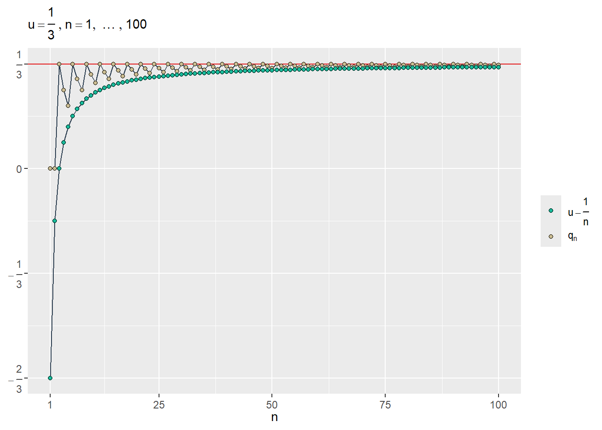
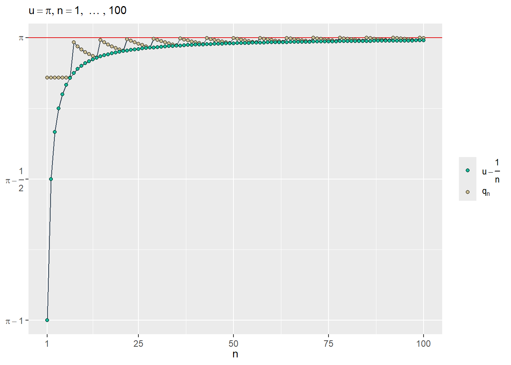
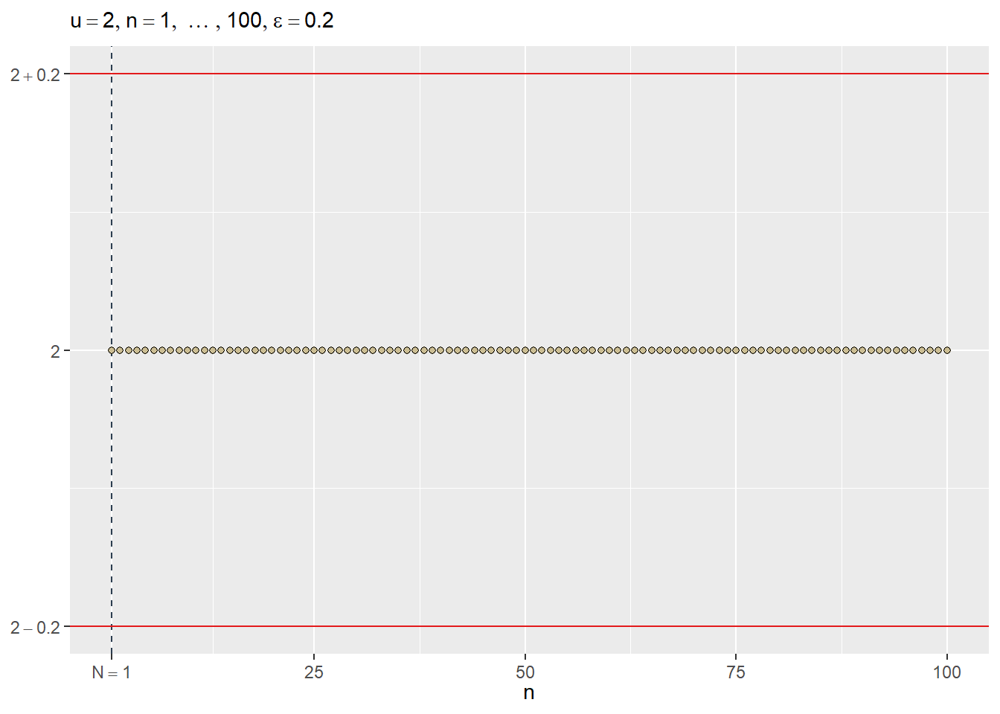
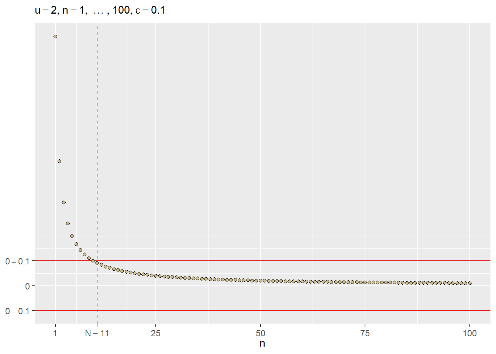

Cauchy’s basic functional equation
functional equations
Exploring the solution of the functional equation \(f(x + y) = f(x) + f(y)\) proposed initially by Augustin-Louis Cauchy
1 Introduction
According to (Aczél, 1966, p. vii), the study of functional equations is one of the oldest topics in mathematical analysis. Great mathematicians such as Jean-Baptiste le Rond d’Alembert, Leonhard Euler, Augustin-Louis Cauchy, Niels Henrik Abel, Karl Theodor Wilhelm Weierstrass, Jean-Gaston Darboux, and David Hilbert all contributed to this field. This post provides a comprehensive exploration of a solution to Cauchy’s basic functional equation over the real numbers, offering an introduction to this area of mathematics.
2 Cauchy’s basic functional equation
Cauchy’s basic functional equation is given by:
\[f(x + y) = f(x) + f(y) \; ; \; x, y \in \mathbb{R} \tag{1}\]
where \(\mathbb{R}\) denotes the set of real numbers. Equation 1 was first solved by Augustin-Louis Cauchy (Cauchy, 2009, Chapter 5, pp. 103-106). For a detailed discussion, see (Aczél, 1966, Chapter 2, pp. 31-36).
3 A particular solution
Cauchy’s proposed solution to Equation 1 offers an elegant approach. By examining specific cases and making a certain assumption about \(f\), he progressively advanced toward a general solution. The following sections detail this process, using modern notation and a formal approach. In Section 3.5, the final solution is presented, followed by additional results for the interested reader.
3.1 \(f\) evaluated at \(0\)
Let \(y = 0\) then:
\[\begin{split} f(x + 0) & = f(x) + f(0) \\ f(x) - f(x) & = f(0) \\ 0 & = f(0) \\ f(0) & = 0f(0) \end{split} \tag{2}\]
3.2 \(f\) and induction
From Equation 2, we can deduce that \(f(x + 0) = f(x) + f(0) = f(x) = f(1x) = 1f(x)\). Furthermore, using the functional equation repeatedly, we get:
\[\begin{split} f(2x) & = f(x + x) \\ & = f(x) + f(x) \\ & = 2f(x) \end{split}\]
\[\begin{split} f(x + 2x) & = f(x) + f(2x) \\ & = f(x) + 2f(x) \\ & = 3f(x) \end{split}\]
This suggests a pattern that we can generalize. Let:
\[f(x_1 + \cdots + x_n) = f(x_1) + \cdots + f(x_n); \; n \geq 2 \text{ and } n \in \mathbb{P}\]
where \(\mathbb{P}\) denotes the set of positive integers. In particular, if \(x_k = x\) for \(k = 1, \ldots, n\) then:
\[f(nx) = nf(x); \; n \geq 2 \text{ and } n \in \mathbb{P}\]
More generally, we have:
\[f(nx) = nf(x); \; n \in \mathbb{N}\]
where \(\mathbb{N}\) denotes the set of natural numbers.
3.3 \(f\) and rational numbers
Assume that \(x = \frac{m}{n}t = qt\) where \(m \in \mathbb{N}\), \(n \in \mathbb{P}\) and \(t \in \mathbb{R}\). Therefore, \(q = \frac{m}{n} \in \mathbb{Q}_{\geq 0}\) where \(\mathbb{Q}_{\geq 0}\) denotes the set of rational numbers greater than or equal to \(0\). Hence:
\[\begin{split} nx & = mt \\ f(nx) & = f(mt) \\ nf(x) & = mf(t) \\ f(x) & = \frac{m}{n}f(t) \\ f \left( \frac{m}{n}t \right) & = \frac{m}{n}f(t) \\ f(qt) & = q f(t) \\ \end{split} \tag{3}\]
3.4 \(f\) as an odd function
Let \(y = -x\) then:
\[\begin{split} 0 = f(0) = f(x + (- x)) & = f(x) + f(-x) \\ 0 & = f(x) + f(-x) \\ -f(x) & = f(-x) \end{split} \tag{4}\]
From Equation 4 we can deduce that \(f((-q)t) = -q f(t)\) where Equation 3 also applies for rational numbers less than \(0\).
3.5 \(f\) as a continuous function on \(\mathbb{R}\)
Assume \(f\) is continuous on \(\mathbb{R}\). This means \(f\) exhibits continuity at every point \(u \in \mathbb{R}\). But what exactly defines a continuous function? Continuity is a fundamental concept in calculus, capturing the idea that a function’s values change smoothly without any abrupt jumps or breaks. While there are various ways to describe continuity, they all revolve around the function’s behavior at a specific point. One common approach uses the idea of limits to rigorously define continuity. A formal definition using limits is provided in Definition 1.
Definition 1 (Continuity in terms of limits) A function \(f\) is continuous at a point \(u \in \mathbb{R}\) if and only if:
- \(f(u)\) is defined
- \(\lim_{x \to u} f(x)\) exists
- \(\lim_{x \to u} f(x) = f(u)\)
Since \(u \in \mathbb{R}\), there exists a sequence \(q_n\)1 of rational numbers that converges to \(u\) (See Section 3.5.1). That is, \(\lim_{n \to \infty} q_n = u\). Using Equation 3, the continuity of \(f\) (Definition 1) and a change of variables in the limit (See Section 3.5.2), we have:
\[\begin{split} f(q_n t) & = q_n f(t) \\ \lim_{n \to \infty} f(q_n t) & = \lim_{n \to \infty} q_n f(t) \\ \lim_{q_nt \to ut} f(q_n t) & = f(t) \lim_{n \to \infty} q_n \\ f(ut) & = f(t) u \\ f(tu) & = f(t) u \end{split} \tag{5}\]
Let \(t = 1\) and \(f(1) = c\) then the solution to Equation 1 is \(f(x) = cx\) where \(x \in \mathbb{R}\), assuming that \(f\) is continuous on \(\mathbb{R}\).
3.5.1 Representing real numbers as limits of rational sequences
Let \(u\) be a real number. For each \(n \in \mathbb{P}\), define \(q_n = \frac{\lfloor nu \rfloor}{n}\), where \(\lfloor nu \rfloor\) denotes the floor of \(nu\). That is, \(\lfloor nu \rfloor\) is the unique integer satisfying:
\[\lfloor nu \rfloor \leq nu < \lfloor nu \rfloor + 1\]
Therefore, \(nu - 1 < \lfloor nu \rfloor\) and \(\lfloor nu \rfloor \leq nu\), so \(nu - 1 < \lfloor nu \rfloor \leq nu\). Thus:
\[\begin{align*} \frac{nu - 1}{n} & < \frac{\lfloor nu \rfloor}{n} \leq u \\ u - \frac{1}{n} & < \frac{\lfloor nu \rfloor}{n} \leq u \end{align*}\]
Since \(\lim_{n \to \infty} \left( u - \frac{1}{n} \right) = u\) and \(\lim_{n \to \infty} u = u\), the squeeze theorem for real sequences (see Section 3.5.1.1) implies that \(\lim_{n \to \infty} \frac{\lfloor nu \rfloor}{n} = u\). Therefore, the sequence \((q_n)\) converges to \(u\).
To illustrate this result, consider the following examples:
Example 1 (\(u = \frac{1}{3}\))
Example 2 (\(u = \pi\))

3.5.1.1 Squeeze theorem for real sequences
If \(\lim_{n \to \infty} q_n = u\) it means that for all \(\varepsilon > 0\) it exists a positive integer \(N\) such that for every positive integer \(n \geq N\), we have that \(|q_n - u| < \varepsilon\). That is:
\[\forall \varepsilon (\varepsilon > 0 \Longrightarrow \exists N (N \in \mathbb{P} \land \forall n (n \in \mathbb{P} \land n \geq N \Longrightarrow |q_n - u| < \varepsilon)))\]
For example, if \(q_n = c\) then \(\lim_{n \to \infty} q_n = c\) (see Example 3). Let \(N = 1\) then \(q_N = c\) and for \(n \geq N\) we have \(q_n = c\). Therefore:
\[\begin{equation*} \begin{split} 0 < \varepsilon & \iff |c - c| < \varepsilon \\ & \iff |q_N - c| < \varepsilon \\ & \iff |q_n - c| = |q_N - c| < \varepsilon \\ & \iff |q_n - c| < \varepsilon \\ \end{split} \end{equation*}\]
Example 3 (\(q_n = 2\))

Also, if \(q_n = \frac{1}{n}\) then \(\lim_{n \to \infty} q_n = 0\) (see Example 4). Let \(N = \left\lfloor \frac{1}{\varepsilon} \right\rfloor + 1\) and for \(n \geq N\) we have that \(q_n = \frac{1}{n}\). Therefore:
\[\begin{equation*} \begin{split} \frac{1}{\varepsilon} < \left\lfloor \frac{1}{\varepsilon} \right\rfloor + 1 & \iff \frac{1}{\varepsilon} < N \\ & \iff \frac{1}{N} < \varepsilon \\ & \iff \frac{1}{n} \leq \frac{1}{N} < \varepsilon \\ & \iff \frac{1}{n} < \varepsilon \\ & \iff \left| \frac{1}{n} - 0 \right| < \varepsilon \\ & \iff \left| q_n - 0 \right| < \varepsilon \end{split} \end{equation*}\]
Example 4 (\(q_n = \frac{1}{n}\))

Now, let \(p_n \leq q_n \leq r_n\) and \(\lim_{n \to \infty} p_n = u = \lim_{n \to \infty} r_n\). Then:
For all \(\varepsilon > 0\) there is some \(N_p\) such that \(n \geq N_p\) where \(|p_n - u| < \epsilon\). So \(u - \varepsilon < p_n < u + \varepsilon\).
For all \(\varepsilon > 0\) there is some \(N_r\) such that \(n \geq N_r\) where \(|r_n - u| < \epsilon\). So \(u - \varepsilon < r_n < u + \varepsilon\).
Let \(N = max \{ N_p, N_r \}\) then because \(p_n \leq q_n \leq r_n\), \(u - \varepsilon < p_n\) and \(r_n < u + \varepsilon\) we have that \(u - \varepsilon < q_n < u + \varepsilon\). So, for all \(\varepsilon > 0\) there is some \(N\) such that \(n \geq N\) where \(|q_n - u| < \varepsilon\). Therefore, \(\lim_{n \to \infty} q_n = u\).
3.5.2 Change of variables in limits for real functions
Under what conditions we can apply a change of variables to calculate a limit as in Equation 5? First, we need to formalize the notion of \(\lim_{x \to \infty} f(x) = L\) (See Protter (1997), pp. 48-54) and use another definition of continuous function using \(\epsilon\) and \(\delta\) that is equivalent to Definition 1 (See Protter (1997), pp. 30-35).
Definition 2 (Limit at infinity) If \(\lim_{x \to \infty} f(x) = L\) it means that for all \(\varepsilon > 0\) it exists a number \(N > 0\) such that \(|f(x) - L| < \varepsilon\) for all \(x > N\). That is:
\[\forall \varepsilon (\varepsilon > 0 \Longrightarrow \exists N (N > 0 \land \forall x (x \in \mathbb{R} \land x > N \Longrightarrow |f(x) - L| < \varepsilon)))\]
Definition 3 (Continuity using \(\epsilon\) and \(\delta\)) A function \(f\) is continuous at a point \(u \in \mathbb{R}\) if and only if:
- The point \(u\) is in an open interval \(I\) contained in \(\mathbb{R}\)
- For all \(\varepsilon > 0\) it exists \(\delta > 0\) such that if \(|x - u| < \delta\) then \(|f(x) - f(u)| < \varepsilon\)
Second, we can establish and prove the following theorem, then apply it to Equation 5:
Theorem 1 (Change of variables in limits) Let \(\lim_{s \to w} f(s)\) and \(\lim_{n \to \infty} f(q(n))\) where \(\lim_{n \to \infty} q(n) = w\). If \(f\) is continuous at \(w\) then \(\lim_{s \to w} f(s) = \lim_{n \to \infty} f(q(n))\).
Proof.
Because \(f\) is continuous at \(w\) by Definition 1 \(\lim_{s \to w} f(s) = w\). Furthermore by Definition 3 for all \(\varepsilon > 0\) it exists \(\delta > 0\) such that if \(|s - w| < \delta\) then \(|f(s) - f(w)| < \varepsilon\).
If \(s = q(n)\) then by 1. for all \(\varepsilon > 0\) it exists \(\delta > 0\) such that if \(|q(n) - w| < \delta\) then \(|f(q(n)) - f(w)| < \varepsilon\).
Because \(\lim_{n \to \infty} q(n) = w\) by Definition 2 for all \(\varepsilon^* > 0\) it exists a number \(N > 0\) such that \(|q(n) - w| < \varepsilon^*\) for all \(n > N\).
Letting \(\varepsilon^* = \delta\) and using 3. and 2. we have that for all \(\varepsilon > 0\) it exists a number \(N > 0\) such that \(|f(q(n)) - f(w)| < \varepsilon\) for all \(n > N\). Therefore \(\lim_{n \to \infty} f(q(n)) = w\).
By 1. and 4. \(\lim_{s \to w} f(s) = \lim_{n \to \infty} f(q(n))\).
4 Conclusion
While advances since Cauchy’s proposed solution (Cauchy, 2009, Chapter 5, pp. 103-106) have yielded weaker assumptions and alternative conditions for \(f\), studying Cauchy’s original approach remains a valuable introduction to functional equations. Interested readers are invited to explore this fascinating topic further in (Aczél, 1966).
5 References
Aczél, J. (1966). Lectures on functional equations and their applications. Academic Press.
Cauchy, A. L. (2009). Cours d’analyse de l’école Royale Polytechnique. Cambridge University Press. https://doi.org/10.1017/CBO9780511693328
Protter, M. H. (1997). A First Course in Real Analysis (2nd ed). Springer New York. https://doi.org/10.1007/978-1-4419-8744-0
Footnotes
It is traditional to write \(q_n\) instead of \(q(n)\) where \(q_n\) is a function whose domain is the set of positive integers.↩︎